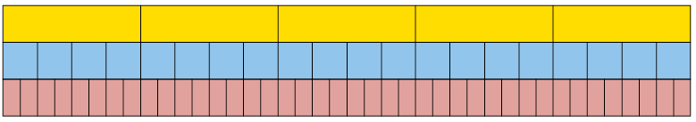

Breuke
Hierdie hoofstuk is hoofsaaklik hersiening van die vorige grade se werk oor breuke. Dit word herhaal omdat dit noodsaaklik is dat jy met selfvertroue met breuke kan werk. Dit is dus belangrik dat jy al die antwoorde moet uitwerk sonder om ’n sakrekenaar te gebruik , en dat jy al die stappe moet wys.
Ekwivalente breuke
Dieselfde getal in verskillende vorms
-
Hoeveel geld is elk van die volgende bedrae?
-
\(\frac{1}{5}\) van R200
\(\frac{2}{10}\) van R200
-
\(\frac{4}{20}\) van R200
Het jy opgelet dat die antwoorde eenders is? Dit is omda \(\frac{1}{5} ,~ \frac{2}{10}\) en \(\frac{4}{20}\) is ekwivalente breuke is. Dit is verskillende maniere om dieselfde getal te skryf. Kyk na hierdie staaf wat in vyf gelyke dele opgedeel is.

Elke deel is een vyfde van die hele staaf.
-
-
Trek lyne op die staaf hier onder om dit op te deel in 10 gelyke dele.

-
Watter breuk van die hele staaf is elk van die 10 dele?
-
Hoeveel tiendes is dieselfde as een vyfde?
-
Hoeveel tiendes is dieselfde as twee vyfdes?
-
Hoeveel vyfdes is dieselfde as agt tiendes?
-
-
Trek lyne op die staaf hier onder om dit op te deel in 25 gelyke dele.

-
Hoeveel vyf-en-twintigstes is dieselfde as twee vyfdes?
-
Hoeveel vyfdes is dieselfde as 20 vyf-en-twintigstes?
In vraag 3(b) het jy gevind dat \(\frac{4}{5}\) ekwivalent is aan \(\frac{20}{25}\): dit is bloot twee verskillende maniere om dieselfde breuk van die staaf te beskryf.
Ons kan dit uitdruk deur \(\frac{4}{5}=\frac{20}{25}\) te skryf, wat beteken dat \(\frac{4}{5}\) en \(\frac{20}{25}\) ekwivalent is.
-
-
Skryf al die ander pare ekwivalente breuke neer waarop jy afgekom het toe jy vrae 2 en 3 gedoen het.
Die geel staaf is opgedeel in vyfdes.

-
In watter breuke is die blou staaf opgedeel?
-
In watter breuke is die rooi staaf opgedeel?
-
Indien jy die geel staaf sou opdeel in twintigstes soos die blou staaf, in hoeveel dele sou jy elk van die vyfdes moes opdeel?
-
Indien jy die geel staaf sou opdeel in veertigstes soos die rooi staaf, in hoeveel dele sou jy elk van die vyfdes moes opdeel?
-
Indien jy die geel staaf sou opdeel in tagtigstes, in hoeveel dele sou jy elk van die vyfdes moes opdeel?
-
Indien jy die blou staaf sou opdeel in tagtigstes, in hoeveel dele sou jy elk van die twintigstes moes opdeel?
-
-
Gestel hierdie staaf word opgedeel in vier gelyke dele (m.a.w. kwarte).

-
Indien die staaf ook in 20 gelyke deeltjies opgedeel word, hoeveel van die kleiner dele sal gelyk wees aan elk van die kwarte?
-
Indien elke kwart eerder in 6 deeltjies opgedeel word, watter breuk van die hele staaf sal elke deeltjie wees?
-
-
Gebruik heelgetalle om hierdie tabel ekwivalente breuke so ver as moontlik te voltooi. Al die breuke in ’n kolom moet ekwivalent wees.
sestiendes
8
4
2
10
14
12
agstes
kwarte
twaalfdes
twintigstes
Ekwivalente breuke kan verkry word deur die teller en die noemer met dieselfde getal te vermenigvuldig, byvoorbeeld \(\frac{1}{5}=\frac{4\times{1}}{5\times{5}}=\frac{4}{20}\)
-
Skryf vyf breuke neer wat ekwivalent is aan \(\frac{3}{4}\).
-
Skryf elk van die volgende getalle as twaalfdes:
\(\frac{2}{3}\)
\(\frac{3}{4}\)
-
\(\frac{20}{25}\)
-
\(\frac{1}{6}\)
Deur dieselfde getal in die teller en die noemer in te deel, in plaas daarvan om die teller en die noemer met dieselfde getal te vermenigvuldig, kan jy ’n eenvoudiger vorm van ’n breuk kry. Wanneer ’n breuk in die eenvoudigste vorm is, het die teller en noemer geen gemene faktore (delers) nie. Jy kry byvoorbeeld die breuk \(\frac{4}{12}\) se eenvoudigste 12 vorm \(\frac{1}{3}\) deur beide die teller en noemer deur die gemene faktor, 4, te deel.
-
Skryf elk van die volgende breuke in hul eenvoudigste vorm:
-
\(\frac{40}{100}\)
-
\(\frac{4}{16}\)
-
\(\frac{5}{25}\)
-
\(\frac{6}{30}\)
-
\(\frac{6}{24}\)
-
\(\frac{8}{88}\)
-
Omskakeling tussen gemengde getalle en gewone breuke
Getalle wat bestaan uit ’n heelgetal en ’n gewone breuk word gemengde getalle genoem.
Voorbeelde van gemengde getalle: \( 3\frac{4}{5}\), \( 2\frac{7}{8}\), en \(8\frac{3}{10}\)
Gemengde getalle kan in uitgebreide vorm geskryf word, byvoorbeeld:
\( 3\frac{4}{5}\) beteken
\(3 +\frac{4}{5}\)
\( 2
\frac{7}{8}\) beteken
\( 2 +\frac{7}{8}\)
\(8\frac{3}{10}\) beteken
\(8 +
\frac{3}{10}\)
Wanneer gemengde getalle opgetel of afgetrek word is dit moontlik om met die heelgetal-deel en die breukdeel afsonderlik te werk:
3 \(\frac{4}{5}+ 1 3\frac{3}{5}\) (dit is nodig om ’n een te “leen” by 13 aangesien \(\frac{4}{5}\) nie van \(\frac{3}{5}\) afgetrek kan word nie.)
\( = 1 6\frac{7}{5}\)
\(= 17 \frac{2}{5}\)
\( 1 3\frac{3}{5}- 3\frac{4}{5}\)
\(= 12 \frac{8}{5}-3\frac{4}{5}\)
\(= 9 \frac{4}{5}\)
Hierdie metode werk egter nie vir vermenigvuldiging en deling nie, en is in sommige gevalle lastig selfs vir optel en aftrek.
’n Alternatiewe metode word dus gebruik vir vermenigvuldiging en deling, en ook dikwels verkies vir optel en aftrek, naamlik om die gemengde getalle om te skakel na onegte breuke, byvoorbeeld :
\( 3\frac{4}{5}\)
\( =3 +\frac{4}{5}\)
\( =\frac{15}{5}+\frac{4}{5}\)
\( =\frac{19}{5}\)
LET WEL
Jy sou die teller 19 in een stap kon verkry deur die noemer (5) met die heelgetal (3) te maal en dan die teller (4) by te tel.
Jy kan dus \(3 \frac{4}{5}+ 1 3\frac{3}{5}\) as volg bereken met hierdie metode:
\( 3\frac{4}{5}+ 1 3\frac{3}{5}\)
\( =\frac{19}{5}+\frac{68}{5}\)
\( =\frac{87}{5}\)
Die antwoord moet weer omgeskakel word na ’n gemengde getal: \(\frac{87}{5}= 1 7\frac{2}{5}\)
-
Skryf die volgende gemengde getalle as onegte breuke:
-
\( 5\frac{3}{5}\)
-
\( 2\frac{3}{8}\)
-
\( 3\frac{4}{7}\)
-
\( 4\frac{5}{12}\)
-
-
Skryf die volgende onegte breuke as gemengde getalle:
-
\(\frac{32}{5}\)
-
\(\frac{25}{8}\)
-
\(\frac{24}{9}\)
-
\(\frac{37}{20}\)
-
Optel en aftrek met breuke
Om twee of meer breuke te kan optel of aftrek, moet hulle eers uitgedruk word met dieselfde noemers. Om dit reg te kry, moet een of meer van die gegewe breuke dalk vervang word met ekwivalente breuke.
|
\(\frac{3}{20}+\frac{2}{5}\) = \(\frac{5 }{20} + \frac{2\times{4}}{5\times{4}}\) om twintigstes te kry . = \(\frac{3}{20}+\frac{8}{20}\) \( =\frac{11}{20}\) |
\(\frac{5}{12}+\frac{7}{20}\) \(= \frac{5+20}{12+20}+\frac{5\times{20}}{12\times{20}}\) \( =\frac{100}{240} + \frac{84 }{240}\) \(=\frac{184}{240}\) \( =\frac{23}{30}\) |
Ons sal later na hierdie
metode om breuke |
In die geval van \(\frac{5}{12} + \frac{7}{20}\), was die vermenigvuldiging van die noemers met 12 en 20 ’n manier waarop jy vir seker ekwivalente breuke met dieselfde noemer sal kry, hier twee- honderd-en-veertigstes. Die getalle kan egter ongerieflik groot raak - dink net aan hoe groot die getalle sal wees as jy hierdie metode sou gebruik vir \(\frac{17}{75} + \frac{13}{85}\)!
Gelukkig is daar (in baie gevalle) ’n manier om die getalle kleiner te hou wanneer jy ekwivalente breuke maak om breuke op te tel of af te trek: jy kan die kleinste gemene veelvoud (KGV) van die noemers gebruik. In die geval van \(\frac{5}{12} + \frac{7}{20}\), is die kleiner veelvoude van die noemers
12: 12; 24; 36; 48; 60; 72; 84
20: 20; 40; 60; 80; 100; 120; 140
Die kleinste getal wat ’n veelvoud van beide 12 en 20 is, is 60.
Beide \(\frac{5}{12}\) en \(\frac{7}{20}\) kan uitgedruk word in sestigstes:
\(\frac{5 }{12}=\frac{5\times{5}}{12\times{5}}=\frac{25}{60}\) want twaalfdes word na sestigstes omgeskakel deur elke twaalfde in vyf gelyke dele op te deel. \(12 \times 5 = 60\) gelyke dele word dus geskep.
Net so,\(\frac{7}{20} = \frac{7\times 3}{20\times 3}=\frac{21}{60}\)
Gevolglik is \(\frac{5}{12}+\frac{25}{60} =\frac{25}{60}+\frac{21}{20} =\frac{46}{60}=\frac{23}{30}\)
Hierdie metode kan die KGV-metode om breuke op te tel en af te trek genoem word.
Optel en aftrek van breuke
-
Watter metode om breuke op te tel en af te trek dink jy sal meestal vir jou die vinnigste en maklikste wees, Metode A (op bladsy 45) of die KGV-metode? Verduidelik.
-
Bereken:
-
\(\frac{3}{8}+\frac{2}{5}\)
-
\(\frac{3}{10}+\frac{7}{8}\)
-
\( 3\frac{2}{5}+ 2\frac{3}{10}\)
-
\(7\frac{3}{8}+ 3\frac{11}{12}\)
-
-
Bereken elk van die volgende:
-
\(\frac{13}{20} - \frac{2}{5}\)
-
\(\frac{7}{12} - \frac{1}{4}\)
-
\( 5\frac{1}{2}-3\frac{3}{8}\)
-
\( 4\frac{1}{9}-5\frac{2}{3}\)
-
-
Paulo en Sergio koop ’n pizza. Paulo eet \(\frac{1}{3}\) van die pizza en Sergio eet twee vyfdes. Hoeveel van die pizza bly oor?
-
Bereken elk van die volgende. Sê of jy Metode A of die KGV-metode gebruik.
-
\(\frac{7}{15}+\frac{11}{24}\)
-
\(\frac{73}{100} - \frac{7}{75}\)
-
\(\frac{3}{25}+\frac{13}{40}\)
-
\(\frac{9}{16} - \frac{3}{10 }\)
-
\(\frac{1}{18}+\frac{7}{20}\)
-
\(\frac{11}{35} - \frac{3}{14}\)
-
\(\frac{5}{8}+\frac{5}{8}+\frac{5}{8}+\frac{5}{8}+\frac{5}{8}+\frac{5}{8}+\frac{5}{8}+\frac{5}{8}+\frac{5}{8}+\frac{5}{8}\)
-
Vermenigvuldiging en deling met breuke
Dink na oor breuke wat vermenigvuldig en gedeel word
-
Lees die vrae hier onder, maar moenie nou antwoorde uitwerk nie. Sê net in elke geval watter berekeninge jy dink gedoen moet word om die antwoord te kry. Jy kan later dink oor hoe om die bewerkings te doen.
-
10 mense kom na ’n partytjie, en elkeen van hulle moet \(\frac{5}{8}\) van ’n pizza kry. Hoeveel pizzas moet gekoop word om vir hul almal genoeg te wees?
-
\(\frac{5}{8}\) van die koste van ’n nuwe kliniek moet gedra word deur die 10 dokters wat daar gaan werk. Hul het ooreengekom om die koste gelykop te verdeel. Watter deel van die koste moet deur elk van die dokters gedra word?
-
Indien ’n hele pizza R10 kos, hoeveel behoort \(\frac{5}{8}\) van ’n pizza te kos?
-
Die eienaar van ’n spazawinkel het 10 hele pizzas. Hoeveel porsies van \(\frac{5}{8}\)van ’n pizza kan hy opmaak uit die 10 pizzas?
-
-
Kyk na die verskillende metodes van berekening boaan die volgende bladsy.
-
Watter metode moet gebruik word by vraag 1(a)?
-
Watter metode moet gebruik word by vraag 1(b)?
-
Watter metode moet gebruik word by vraag 1(c)?
-
Watter metode moet gebruik word by vraag 1(d)?
Metode A: \(\frac{10}{10} \times \frac{5}{8}=\frac{50}{80}\) Metode B: \(\frac{5}{8}=\frac{50}{80}\). 50 tagtigstes \(\div 10 = \frac{5}{80}\)
Metode C: Hoeveel agstes in tien heles? 80 agstes. Hoeveel vyf-agstes in 80? \(80 \div 5 = 16\)
Metode D: \(\frac{5}{8}\) is 5 agstes. \(10 \times 5\) agstes = \(\frac{50}{8}\) Metode E: \(\frac{5}{8} \div 10=\frac{5}{8}\times\frac{10}{1}=\frac{50}{8}\)
Vermenigvuldig ’n breuk met ’n heelgetal
Voorbeeld:
\(8 \times \frac{3}{5}=8 \times 3 \text{ vyfdes } = 24 \text{ vyfdes } \frac{24}{5}= 4\frac{4}{5}\)
Deel ’n breuk deur ’n heelgetal
Jy kan ’n breuk deur ’n heelgetal deel deur dit om te skakel na ’n ekwivalente breuk met ’n teller wat ’n veelvoud van die heelgetal is.
Voorbeeld:
\(\frac{5}{8} \div 5 = \frac{5}{8} \div = 10 \text{ vyftiendes} \div 5 = 2 \text{ vyftiendes} =\frac{2}{15}\)
’n Breuk van ’n heelgetal, en ’n breuk van ’n breuk
Voorbeeld:
-
\(\frac{7}{12}\) van R36.
\(\frac{1}{12}\) van R36 is dieselfde as R\(3 6\div 12\) = R3, dus \(\frac{7}{7}\) van R36 is \( 7\times\) R3 = R21
-
\(\frac{7}{12}\) van 36 vyftigstes.
\(\frac{1}{12}\) van 36 vyftigstes is dieselfde as \(36 \text{vyftigstes} \div 12 = 3\) vyftigstes ,
dus \(\frac{7}{12}\) van 36 vyftigstes is \(7 \times\) 3 vyftigstes = 21 vyftigstes.
\(\frac{7}{12}\times\frac{36}{50}\) beteken \(\frac{7}{12}\) van \(\frac{36}{50}\), dit is presies dieselfde.
\(\frac{}{12}\) van \(\frac{36}{50}\) is dieselfde as \(\frac{36}{50} \div 12 = \frac{3}{50}\), dus \(\frac{7}{12}\) van \(\frac{36}{50}\) is \(7 \times \frac{3}{50}=\frac{21}{50}\).
-
-
-
-
Jy het in die voorbeeld hier bo \(\frac{7}{12}\times\frac{36}{50}\) bereken. Wat was die antwoord?
-
Bereken \(\frac{7\times 36}{12\times 50}\) en vereenvoudig die antwoord.
-
Voorbeeld:
\(\frac{2}{3}\times\frac{5}{8}=\frac{2}{3}\) van \(\frac{15}{24}=\frac{1}{3}\) van \(\frac{30}{24}=\frac{10}{24}=\frac{5}{12}\)
Dieselfde antwoord word verkry met \(\frac{2}{5}\times\frac{3}{8}\)
Om twee breuke te vermenigvuldig, maal jy bloot die tellers sowel as die noemers.
\(\frac{2}{3}\times\frac{9}{20}=\frac{2\times 9}{3\times 20}=\frac{18}{60} = \frac{3}{10}\)
Deel deur ’n breuk
Om deur ’n breuk te deel verg ander logika:
Indien daar 40 pizzas is, hoeveel leerders kan elk \(\frac{3}{5}\) van ’n pizza kry?
Die getal vyfdes in 40 pizzas: \(40 \times 5 = 200\) vyfdes van ’n pizza.
Die aantal 3-vyfdes is dus \(200 \div 3 = 66\) porsies van \(\frac{3}{5}\) pizza, dan bly daar nog 2 vyfdes van ’n pizza oor.
Aangesien die porsie vir elke leerder 3 vyfdes van ’n pizza is, is die 2 vyfdes wat oorbly, 2 derdes van ’n porsie.
So, om \(40 \div \frac{3}{5}\),te bereken het ons vermenigvuldig met 5 en gedeel deur 3,en dit gee 66 en twee-derdes porsies. .
Om die waarheid te sê, ons het \(40 \times \frac{5}{3}\) bereken.
Deel is die inverse bewerking van vermenigvuldig. Om dus deur ’n breuk te deel, vermenigvuldig jy met sy inverse.
Voorbeeld:
\(\frac{18}{60}\times\frac{2}{3}=\frac{18}{60}\times\frac{3}{2}=\frac{54}{120} = \frac{9}{20}\)
Vermenigvuldig met en deel deur breuke
-
Bereken elk van die volgende:
-
\(\frac{3}{4}\) van \(\frac{12}{25}\)
-
\(\frac{3}{4}\times\frac{12}{100}\)
-
\(\frac{3}{4}\) van \(\frac{13}{15}\)
-
\(\frac{3}{4} \times 1 \frac{1}{2}\)
-
\(\frac{3}{20}\times\frac{5}{6}\)
-
\(\frac{3}{20}\) van \(\frac{3}{20}\)
-
-
’n Klein fabriek vervaardig koperpanne. Presies \(\frac{3}{50}\) kg koper is nodig om een pan te vervaardig.
-
Hoeveel panne kan vervaardig word as \(\frac{318}{50}\) kg koper beskikbaar is?
-
Hoeveel panne kan vervaardig word as \(\frac{20}{50}\) kg koper beskikbaar is?
-
Hoeveel panne kan vervaardig word as \(\frac{2}{5}\) kg koper beskikbaar is?
-
Hoeveel panne kan vervaardig word as \(\frac{2}{4}\) kg koper beskikbaar is?
-
Hoeveel panne kan vervaardig word as \(\frac{144}{50}\) kg koper beskikbaar is?
-
Hoeveel panne kan vervaardig word as 5 kg koper beskikbaar is?
-
-
Bereken:
-
\(\frac{18}{50}\div \frac{3}{50}\)
-
\(\frac{9}{25}\div \frac{3}{50}\)
-
\(\frac{144}{50}\div \frac{3}{50}\)
-
\( 2\frac{44}{50}\div \frac{3}{50}\)
-
\( 2\frac{22}{25}\div \frac{3}{50}\)
-
\(\frac{5}{8}\div \frac{3}{50}\)
-
\(20 \div \frac{3}{50}\)
-
\(2 \div \frac{3}{50}\)
-
\(1 \div \frac{3}{50}\)
-
\(\frac{1}{2}\div \frac{3}{50}\)
-
-
'n Reghoek is 3 \(\frac{5}{8}\) cm lank, en \( 2\frac{3}{5}\) cm breed.
-
Wat is die oppervlakte van die reghoek?
-
Wat is die omtrek van die reghoek?
-
-
’n Reghoek is \( 5\frac{5}{6}\) cm lank, en sy oppervlakte is \(8 \frac{1}{6}\) cm2.
Hoe breed is hierdie reghoek?
-
Bereken:
-
\(2\frac{3}{8}\) van \( 5\frac{4}{5}\)
-
\( 3\frac{2}{7}\times2\frac{7}{12}\)
-
\( 8\frac{2}{5}\div3\frac{3}{10}\)
-
\( 3\frac{3}{10}\times3\frac{3}{10}\)
-
\( 2\frac{5}{8}\div5\frac{7}{10}\)
-
\(\frac{3}{5}\times 1 \frac{2}{3}\times 1 \frac{3}{4}\)
-
-
Bereken:
-
\(\frac{2}{3} ( \frac{3}{4}+\frac{7}{10})\)
-
\(\frac{2}{3}\times \frac{3}{4}+\frac{2}{3}\times \frac{7}{10}\)
-
\(\frac{5}{8} ( \frac{4}{5} - \frac{1}{3})\)
-
\(\frac{5}{8}\times \frac{4}{5} - \frac{3}{20}\times \frac{1}{3}\)
-
-
’n Stuk grond met ’n oppervlakte van 40 ha word verdeel in 30 gelyke plotte. Die prys van die hele stuk grond is R45 000. (Onthou “ha” is die afkorting vir hektaar.)
-
Jim koop \(\frac{2}{5}\) van die grond.
-
Hoeveel plotte is dit, en hoeveel behoort dit te kos?
-
Wat is die oppervlakte van die grond wat Jim koop?
-
-
Charlene koop \(\frac{1 }{3}\) van die grond. Hoeveel plotte is dit, en hoeveel behoort dit te kos?
-
Bongani koop die res van die grond. Bepaal die breuk van die grond wat hy koop.
-
Kwadrate, derdemagte, vierkants- en derdemagswortels
-
Bereken:
-
\(\frac{3}{4}\times \frac{3}{4}\)
-
\(\frac{7}{10}\times\frac{7}{10}\)
-
\(2\frac{5}{8} \times2\frac{5}{8}\)
-
1 \(\frac{5}{12} \times1\frac{5}{12}\)
-
\( 3\frac{5}{7} \times3\frac{5}{7}\)
-
10\(\frac{3}{4} \times 10\frac{3}{4}\)
\(\frac{9}{16}\) is die kwadraat van \(\frac{3}{4}\), want \(\frac{3}{4}\times\frac{3}{4}=\frac{9}{16}\). \(\frac{3}{4}\) is dus die vierkantswortel van \(\frac{9}{16}\).
-
-
Vind die vierkantswortel van elk van die volgende getalle.
-
\(\sqrt\frac{3}{4}\)
-
\(\sqrt\frac{36}{121}\)
- \(\sqrt\frac{64}{25}\)
- \(\sqrt{2\frac{46}{4}}\)
-
-
Bereken.
-
\(\frac{3}{4}\times \frac{3}{4}\times \frac{3}{4}\)
-
\(\frac{7}{10}\times\frac{7}{10} \times \frac{7}{10}\)
-
\(\frac{9}{10} \times \frac{9}{10} \times \frac{9}{10}\)
-
\(\frac{5}{8} \times \frac{5}{8} \times \frac{5}{8}\)
-
-
Vind die derdemagswortel van elk van die volgende getalle:
-
\(\sqrt[3]\frac{27}{1000}\)
-
\(\sqrt[3]\frac{125}{216}\)
-
\(\sqrt[3]\frac{1000}{216}\)
-
\(\sqrt[3]{15\frac{5}{8}}\)
-
Ekwivalente vorms
Breuke, desimale en persentasies
-
Die reghoekige strook aan die regterkant is in klein deeltjies opgedeel.

-
Hoeveel van hierdie deeltjies is daar in die reghoek?
-
Hoeveel van hierdie deeltjies is daar in een tiende van die reghoek?
-
Watter breuk van die reghoek is blou?
-
Watter breuk van die reghoek is pienk?
In plaas van “6 honderdstes” kan ons sê “6 persent” of, kortliks, “6%”. Dit beteken dieselfde. 15 persent van die reghoek hier regs is blou.
-
-
Watter persentasie van die reghoek is groen?
-
Watter persentasie van die reghoek is pienk?
0,37 en 37% en \(\frac{37}{100}\) is ekwivalente vorms van dieselfde waarde (37 honderdstes).
-
Druk elk van die volgende op drie maniere uit: as ’n desimaal, ’n persentasie en ’n breuk (in eenvoudigste vorm):
-
3 tiendes
-
7 honderdstes
- 37 honderdstes
-
7 tiendes
- 2 vyfdes
-
7 twintigstes
-
- Voltooi die tabel:
Desimaal
Persentasie
Gewone breuk (eenvoudigste vorm)
0,2

40%

\(\frac{3}{8}\)
0,05

-
- Jannie eet ’n kwart van ’n waatlemoen. Watter persentasie van die
waatlemoen
is dit?
- Sibu drink 75% van die melk in ’n bottel. Watter
breukdeel van die melk in die
bottel het hy gedrink?
- Jem gebruik 0,18 van die verf in ’n blik. Indien hy die
helfte van wat oorbly die
volgende keer gebruik, watter breuk (in eenvoudigste vorm) bly oor?
- Jannie eet ’n kwart van ’n waatlemoen. Watter persentasie van die
waatlemoen
is dit?